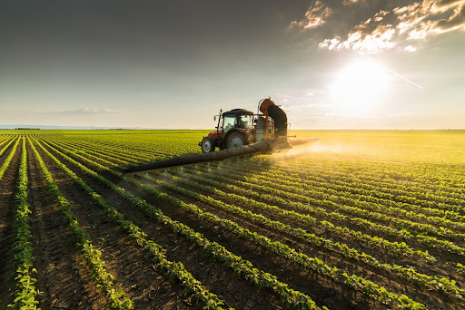
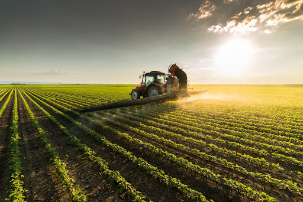
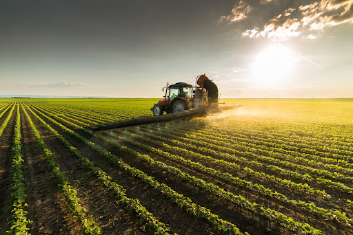
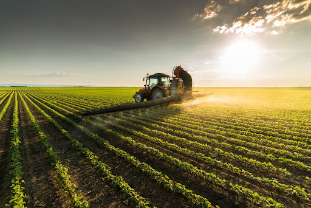

Galeria de Imagens

 



A conexão entre o campo e a cidade ocorre de forma interdependente: o meio rural fornece matérias-primas, insumos e alimentos essenciais ao sustento da população, enquanto o meio urbano desenvolve e disponibiliza tecnologias que aumentam a produtividade, a eficiência e a qualidade de vida no campo. Essa relação simbiótica é fundamental para o desenvolvimento de ambos os espaços. Afinal, sem a produção agrícola, a cidade não se sustenta; e sem o avanço tecnológico e estrutural promovido pela cidade, o campo enfrenta dificuldades para se modernizar e crescer. Diante disso, é necessário que a sociedade reconheça a importância dessa parceria e passe a valorizá-la de maneira mais efetiva, promovendo ações que fortaleçam essa conexão e celebrem sua relevância para o bem-estar coletivo.